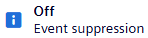
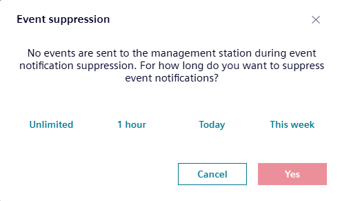
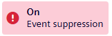
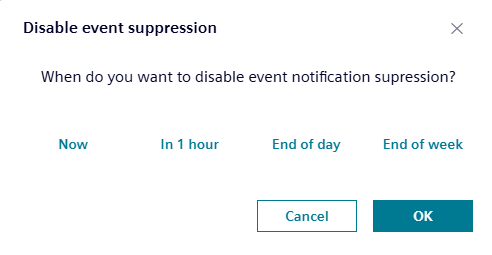

Event suppression during commissioning (device)
You want to prevent unnecessary or unwanted event notifications, such as known issues or during maintenance activities. When the event suppression property is enabled, any events that would normally be generated by the object are suppressed and not reported to other devices or clients, for example, Desigo CC.

This function suppresses all events of this device. If suppression is only required for one BACnet object, the suppression must be carried out for the respective BACnet object.
Event suppression (data point only)
- Go to the Configuration tab.
- In the status bar, select Event suppression

. - The Event suppression dialog box opens.
- Select the desired time range for the event suppression.

- Select Yes.
- The status of the Event suppression changes to On.

Switch of the event suppression
- In the status bar, select Event suppression.
- Select the desired time range for the Disable event suppression.

- Select OK.